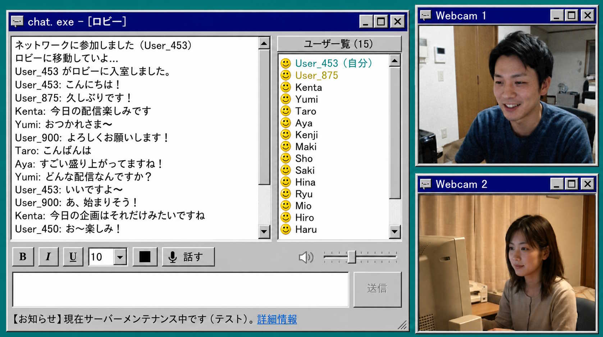

Selamat datang di situs web resmi chat.exe
■ Tentang Aplikasi
Asal mula internet ada di sini
Aplikasi obrolan baru yang menggabungkan antarmuka pengguna retro Windows 95/98 dengan komunikasi waktu nyata modern!
Tidak ada "suka", tidak ada "pengikut", tidak ada iklan, tidak ada algoritma rekomendasi, dan tidak ada pelatihan AI. Rasakan suasana internet awal yang murni dan sederhana, tanpa membandingkan diri Anda dengan orang lain.
"chat.exe" adalah aplikasi komunikasi dengan desain klasik yang mengingatkan pada hari-hari awal komunikasi komputer. Dengan jendela abu-abu yang bernostalgia dan tombol yang kokoh, aplikasi ini tidak hanya menampilkan obrolan teks, tetapi juga fitur modern seperti "panggilan video," "berbagi layar," dan "panggilan suara."
Penampilannya mungkin retro, tetapi teknologi kompresi video dan audio di baliknya sepenuhnya dibangun kembali dengan teknologi terbaru (seperti pengkodean perangkat keras H.264 dan codec audio Opus). Ini menghasilkan komunikasi yang sangat lancar dan berkualitas tinggi, berlawanan dengan penampilannya.

■ Fitur Utama dan Penggunaan
|
✨ Antarmuka Retro yang Bernostalgia Desain bernostalgia yang merupakan penghormatan pada OS masa lalu. Jendela klasik tanpa dekorasi yang tidak perlu pasti akan membuat Anda dalam suasana hati yang baik. 🎥 Panggilan Video dan Panggilan Suara ・ Berbagi Layar Tidak hanya mendukung teks, tetapi juga panggilan melalui webcam dan mikrofon, serta berbagi layar PC Anda sebagai standar. |
🎨 Hiasi Teks dengan Bebas Tebal, miring, ubah warna teks dan ukuran teks - ekspresikan gaya Anda sendiri dalam suasana ruang obrolan masa lalu yang hidup. 🚀 Respons Ultra-Cepat Ucapkan selamat tinggal pada aplikasi yang berat. Desain ultra-ringan yang dikembangkan secara eksklusif dalam C++ dan dipangkas hanya pada hal-hal penting. |
💡 Pelajari cara menyematkan chat.exe di situs web Anda di sini!
■ Persyaratan Sistem
- OS: Windows 10 / 11 (hanya 64-bit)
- Prosesor: Intel Core i3 atau lebih tinggi
- Memori (RAM): 4 GB atau lebih
- Lainnya: Diperlukan koneksi internet. Webcam dan mikrofon (untuk panggilan video)
■ Kebijakan Privasi
Aplikasi ini menggunakan komunikasi waktu nyata di server, tetapi konten panggilan, aliran video, dan log obrolan tidak disimpan secara permanen atau dikumpulkan di server pengembang. Aplikasi ini juga dilengkapi dengan fitur anti-spam.
Baca kebijakan privasi lengkap di sini
Anda adalah pengunjung nomor
Hak Cipta (C) 2026 Tim Pengembangan chat.exe. Seluruh hak cipta dilindungi undang-undang.